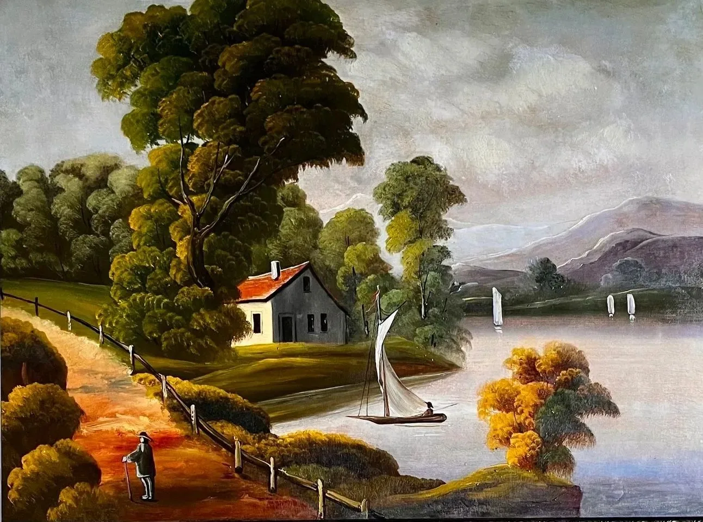
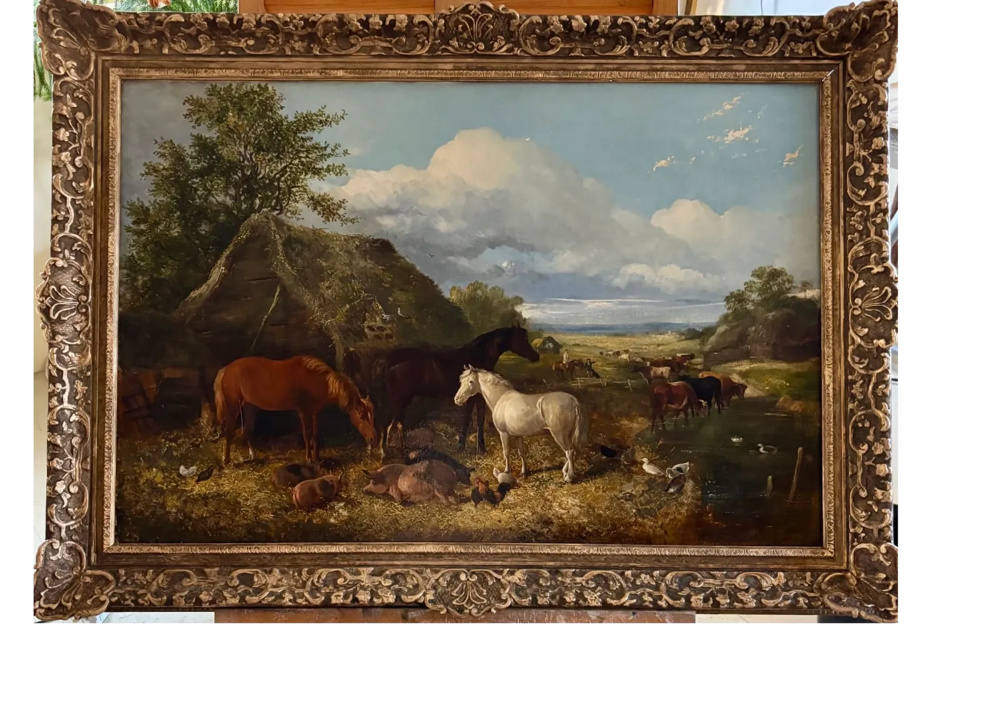

Art Restoration and Conservation in Maine
Preserving Your Heirloom Art


Our Mission
Art restoration is valuable because it allows us to preserve and appreciate cultural heritage by ensuring historical artworks remain in good condition, enabling future generations to experience the original artist's intent and craftsmanship.
About Marshall Art Restorations
At Marshall Art Restorations, we employ a variety of advanced painting restoration techniques to breathe new life into your artwork. We carefully assess each piece to determine the best approach, ensuring that the original colors and textures are preserved. Whether it's a classic oil painting or a modern acrylic piece, we handle each restoration project with utmost care.
Contact Us
Call or email to set up a free consultation to look at your artwork.
marshallartrestorations@gmail.com
New Gloucester / Camden / Portland, Maine
Linda J Marshall